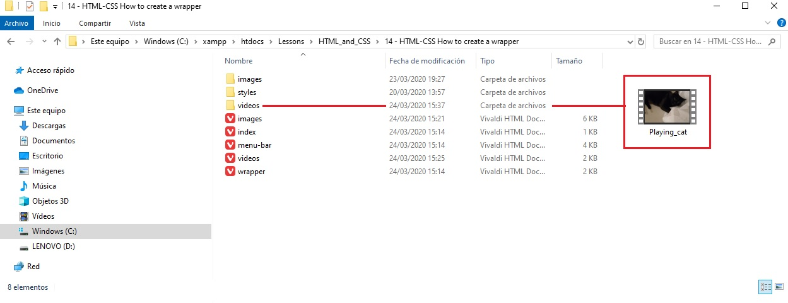
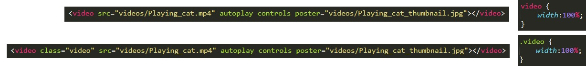
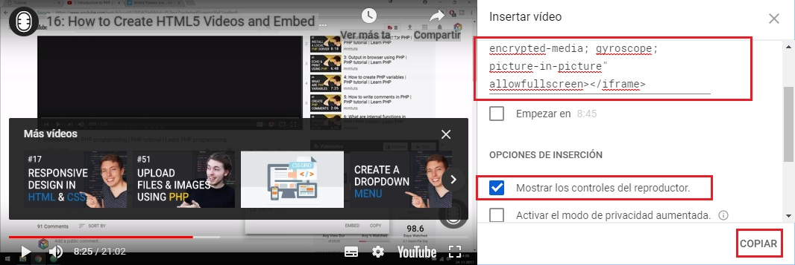
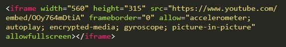

In this lesson we are going to learn how to create and embed HTML5 videos into a website using two methods. Method 1 - linking to a video file in our root folder. Method 2 - Embedding a video from another online website.
First we need to learn how to include a video in our root folder. We have a wrapper on our page which will contain our video. When it comes to browser support all Modern day browsers (HTML5) should support MP4 video file formats. Before this we had to use flash on our websites because we did not have native support.
28. Create a folder called videos in our root folder then drop a MP4 video file in it.
29a. To add a video we use a video tag in HTML.
29b. autoplay means that the video will autoplay once the user enters the page.
29c. controls means that the video will have control buttons such as pause, skip ahead etc.
29d. poster is a thumbnail for the video if you want to select your own. when the video has a thumbnail it is displayed until the video is clicked on then the video starts to auto play.
30a. lets say we did not use an MP4 video and we want to let the user know that it is not supported in the browser.
30b. We can add more HTML code to specify the type of video file such as avi. We can also add an error mesaage if the video does not display.
31a. At the moment the mp4 video is very large but we can solve this in the CSS style sheet.
31b. We can either use a generic format for all video tags in the HTML file or assign a class to each tag.
31c. Note that we have used width: 100%; so the video now shows within the wrapper container.
32a. Video files can be very large so they could take up a lot of space on our server. It might be worth storing them ofline on a website such as youtube or vimeo and embedding them in our website.
32b. To do this in a youtube video we select the share button at the bottom of video then select the code symbol which gives us a pop up menu where we can select the options we want to use for the video. When we have selected the options we want we copy which takes the code at the top.
32c. we can drop the coppied code as is into our HTML and the video will show.
33a. One problem of using iframes is that it scales automatically. To control this we can wrap the iframe in another container with a class. we remove all the styling from the HTML and then add some very specific CSS code.
33b. We use a position relative on the wrapper class so we can correctly dimension our full screen video box. position is a means to move around elements on our website. we should not use it unless we have a specific purpose as it may mess up our website.
33c. We add a padding to the wrapper bottom of 56.25%. This is the percentage notation for a 16:9 video ratio.
33d. We add 25px of padding top and height of 0px.
33e. Now we add a iframe sytylig to the container using position absolute. This is why we needed a position relative above in the container.
33f. Now we can define the left, top, right and bottom to fit exactly within the container.
33g. Finally, we specift that we want the width and height to be 100% so it completely fills the video wrapper.
33h. Now bellow we can see that the video completely fills the container.
34a. Note that if we change the width of the page wrapper from 1000px to 80%, when we cange the browser window size, the video automatically scales as well.